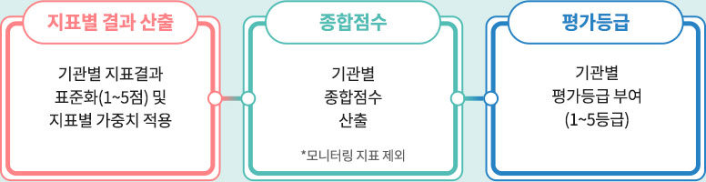

메디온에서는 요양병원의 입원급여 적정성 평가를 대비하기 위해 종합점수 산출에 반영되는
15개 평가지표에 대하여 자가 진단할 수 있도록 도와드립니다.
평가지표는 크게 구조영역과 진료영역으로 나누어지며,
구조영역에 4개의 평가지표, 진료영역에는 진료과정에 3개의 평가지표진료경과에 8개의 평가지표가 있습니다.

*자가진단의 입력사항을 모두 작성하시면 기관별 지표결과가 산출되고, 그 지표 별 결과를 1점~5점으로 표준화 해서 각 지표 별 가중치를 적용, 종합점수가 산출됩니다. 실제로는 이 종합점수를 가지고 각 기관 별로 상대평가를 하게 되므로 자가진단 결과는 참고용으로 활용해 주시고 구체적인 내용은 메디온 전문가 매칭 서비스를 통한 컨설팅을 통해 도움 받으시기 바랍니다.